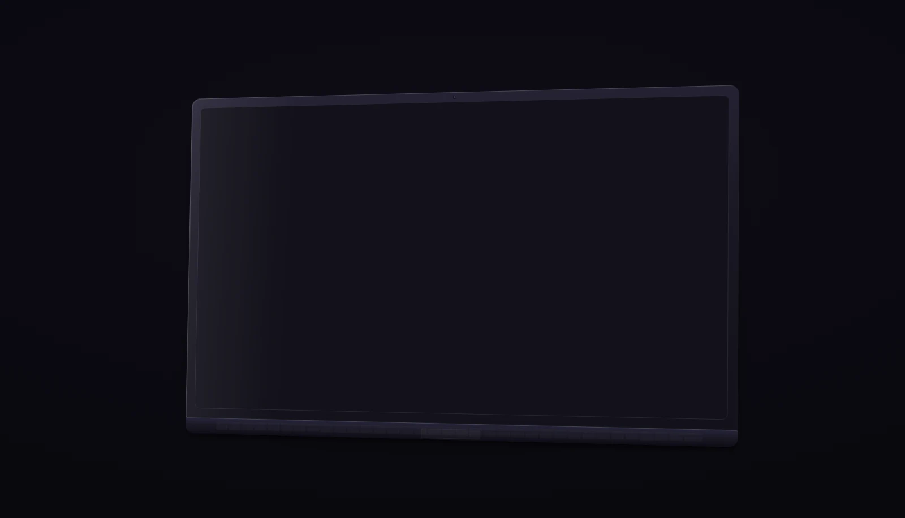
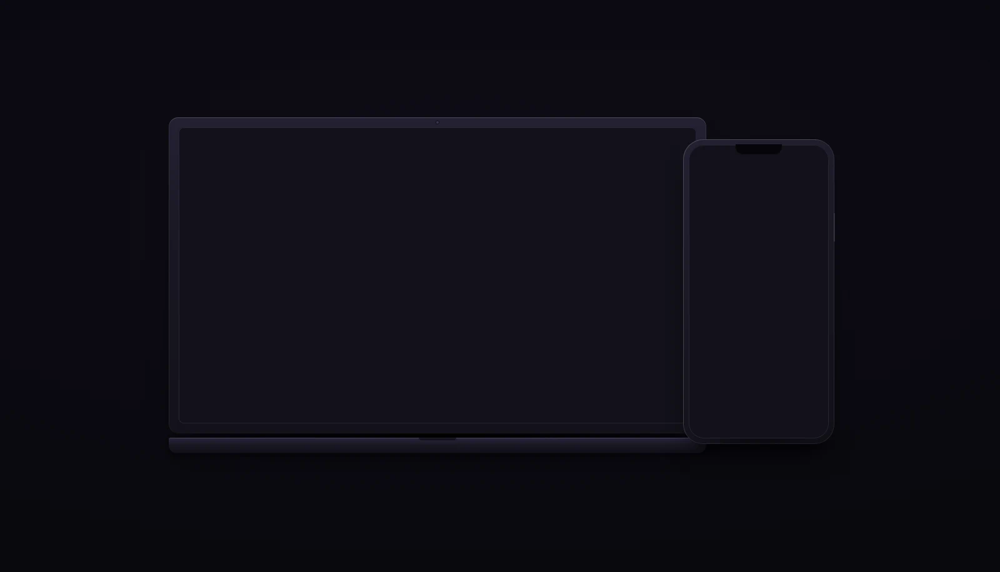

Three laptop mockups, each rendered on a 1600×916 canvas, then dropped into the real card slot twice: at the normal 620×360 and at the short-screen 620×240 (max-height:900px). Both use object-fit:cover with the default centered position, exactly like .work-image img.

